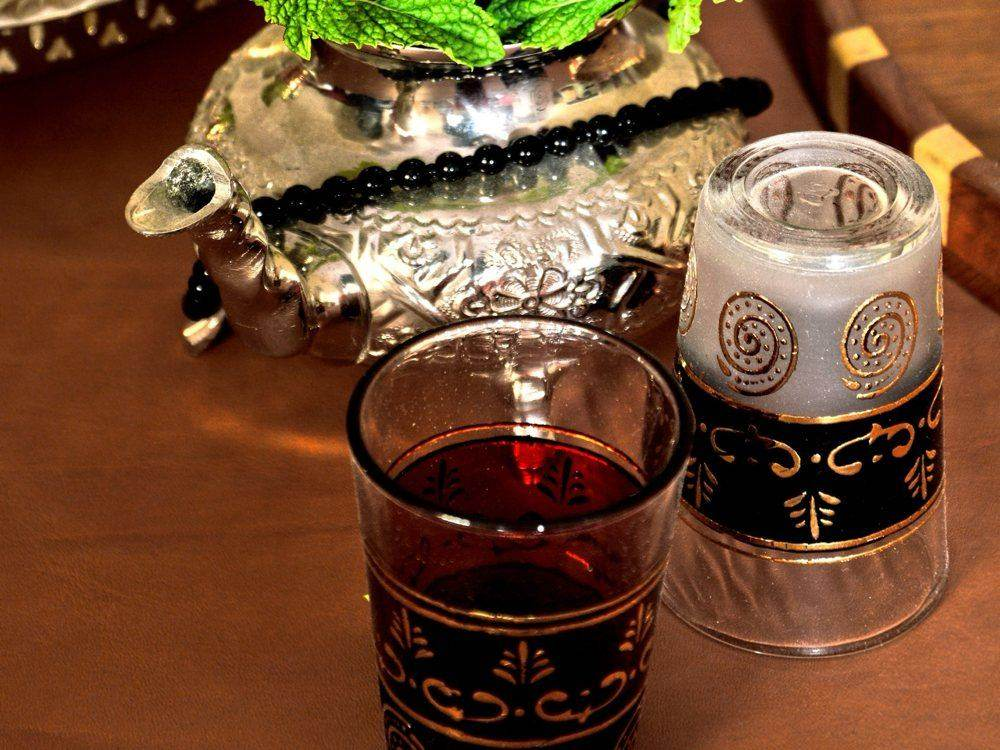

The hammam is one of the great traditions of Moroccan life. For centuries, every neighbourhood has had its public bath, next to the mosque, the bakery and the fountain. Moroccans go every week or two to wash, relax and meet friends. For a visitor, a hammam is one of the most authentic and relaxing experiences of a trip, but it can also be confusing the first time: where do you go, what do you wear, what happens inside, how much do you pay?
This guide answers all those questions so that you can enjoy your first hammam with confidence.
What is a hammam?
A hammam is a steam bath. Unlike a sauna, it is humid, not dry. The ritual is simple: you warm up in the steam to open the pores, wash with a natural black soap, have your skin scrubbed with a rough glove, then rinse with warm and cool water. You come out with incredibly soft skin and a deep feeling of calm.
Traditional hammams usually have three rooms, from the coolest to the hottest:
- The cool room: to start, finish and rest.
- The warm room: where you sit, wash and are scrubbed.
- The hot room: close to the fire, full of steam, to open the pores.
Buckets of hot and cold water are filled at the taps, and you pour the water over yourself with a small bowl.

Public hammam or spa hammam?
| Public (local) hammam | Spa hammam | |
|---|---|---|
| Atmosphere | Authentic, busy, local families | Calm, private, for visitors |
| Setting | Simple, tiled rooms | Elegant, often in a riad or hotel |
| Price (approx.) | Very cheap: a few euros with the scrub | From around €20 to €100 or more with a massage |
| Bring your own products? | Yes | No, everything is provided |
| Best for | Travellers curious about daily life | A first time, couples, relaxation |
Prices change by city and by place, so always check before you start. In public hammams, men and women use separate sections, or the same building at different times of the day (often women in the afternoon and men in the morning and evening).
What happens inside, step by step
- Undress in the changing area and leave your things in a locker or with the attendant.
- Warm up in the hot room for 10 to 15 minutes, pouring warm water over yourself.
- Black soap: spread the savon beldi, a soft paste made from olive oil, all over the body and leave it for a few minutes.
- The scrub: the attendant (or you yourself) rubs the skin firmly with the kessa, a rough glove. Be ready: you will see dead skin rolling off. That is normal, and the best part!
- Ghassoul: a mineral clay from the Atlas Mountains, mixed with water and used as a mask for the hair and skin.
- Rinse with warm, then cooler water.
- Rest in the cool room with a mint tea or a glass of water. In a spa, this is often followed by an argan oil massage.

What to wear and what to bring
What to wear
- Women: usually keep their underwear bottoms on. In a spa, disposable underwear is often provided.
- Men: wear shorts or swim shorts. Full nudity is not the custom in Moroccan hammams.
What to bring to a public hammam
- A towel and flip-flops.
- Black soap, a kessa glove and ghassoul (sold in the souks, very cheap).
- Shampoo, a comb and a change of underwear.
- A small mat or plastic bag to sit on, and some cash.
In a spa hammam, you only need yourself: towels, robes and products are included.
Hammam etiquette
- Be discreet: photos are never allowed inside.
- Share the space: in a public hammam, people sit close together; you may be offered help to wash your back. It is a friendly gesture.
- Don't waste water: fill your bucket, don't leave taps running.
- Tip the attendant who scrubbed you, especially in a public hammam.
- Take your time: a hammam is not a quick shower. Plan 1 to 2 hours.
Where to try a hammam
- Marrakech: the city with the most choice, from small neighbourhood hammams in the medina to luxury spas in riads. Perfect after a day in the souks. See Marrakech in 3 days.
- Fes: some of the oldest hammams in the country are hidden in the medina.
- Riads and hotels: many riads have a small private hammam. Ask us and we will choose accommodation with a hammam for your tour.
- After the desert: a hammam is the best way to remove the sand after a night in Merzouga. See our guide to desert camps.
Tips for a first hammam
- Start with a spa hammam if you are shy or travelling with children, then try a local one.
- Don't go just after a big meal, and drink water before and after.
- Avoid the scrub if you have sunburn, have just shaved or waxed, or have a skin condition.
- Ask for advice if you are pregnant or have heart or blood pressure problems: the heat can be strong.
- Buy your products in the souk: black soap, a kessa and ghassoul make great souvenirs. See bargaining in the souks.
Frequently asked questions
Can tourists go to a public hammam?
Yes, most local hammams welcome visitors. It helps to go with a guide or a local friend the first time, or to ask your riad to recommend one nearby.
Do you go naked in a Moroccan hammam?
No. Women usually keep their underwear bottoms on and men wear shorts. Men and women are always separated in public hammams.
How much does a hammam cost in Morocco?
A public hammam with a scrub costs only a few euros. A spa hammam usually costs from around €20 for a simple ritual to €100 or more with a massage, depending on the city and the level of the spa.
Can couples go to a hammam together?
Not in public hammams, which are separated by gender. Many spa hammams offer private rituals for couples.
How often do Moroccans go to the hammam?
Many families go once a week or every two weeks, often on Thursday or Friday, and before important events such as weddings and religious holidays.
Keep reading: Moroccan food guide · What to wear in Morocco · Travelling during Ramadan